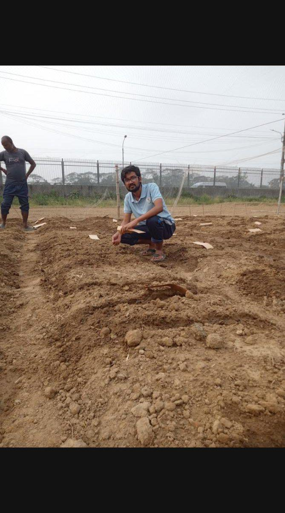

Student and early-career trials rarely have dozens of replicates. Good design still separates genetic signal from field noise.
Simple R scripts can randomise layouts and later analyse RCBD or augmented designs. Start with a clear field map before sowing — most analysis problems begin with unclear plot labels.